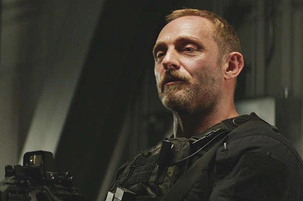

Kenzo Sutarwan - Minggu, 27 Agustus 2023
At the start of the film, Will Sawyer, a Marine veteran and commander of a Rescue Team at the FBI, loses his left leg below the knee when he and partner Ben Gillespie encounter a hostage taker carrying a suicide bomb. Then ten years after the incident, Will Sawyer is a private security consultant recommended by Gillespie to review the security of the world's tallest skyscraper called "The Pearl" in Hong Kong. The owner is Zhao Long Ji. Sawyer is accompanied by his wife Sarah and twin sons, namely Henry and Georgia, Sawyer lives with him in the unopened residential floor. Sawyer meets with Zhao, Gillespie, director of security and chief underwriter for Pierce, to report that the computerized fire and security system has passed its tests.
Zhao gives Sawyer the tablet that gives him full control of the Pearl system. Sawyer and Gillespie head to the offsite facility, but a thief hired by international terrorist Kores Botha tries to steal the tablet. Gillespie reveals he also worked for Botha and attacks Sawyer for the tablets, but the confrontation ends in Gillespie's death. Botha and a group of his men broke into Pearl and tampered with the safety systems by using a water-reactive chemical to start a fire on the 96th floor, creating a barrier that made it impossible to enter or exit any of the upper 130 floors. Sawyer tries to return to Pearl, but is attacked by Xia, one of Botha's associates. Xia and his agents took the tablet and killed everyone in the off-site facility.
They then used the tablet to disable the fire suppression system on the Pearl and activate the air vents to spread the fire to the upper floors. Zhao and the director of security send a security guard to save the Sawyer family, but the guard is killed by an explosion and the family is believed to be dead. Urged by Pierce, Zhao orders the remaining personnel to evacuate via helicopter, but Pierce reveals that he is also an agent of Botha, killing everyone except Zhao. Zhao eventually fled to his penthouse apartment and then locked it away from any disturbance. Inspector Wu and his team work to secure the Mutiara and arrest Sawyer, who is believed to be behind the incident. Sawyer evades them and breaks into Pearl over the fire barrier using a crane from an adjacent building. He killed Pierce before Pierce could kill his family.
Sawyer has Sarah and Henry cross a fire barrier in a free-fall elevator before applying the emergency brakes, allowing them a safe escape; Sarah immediately explained the situation to Wu and Botha's men would likely escape via parachute to the nearest landing zone. Sawyer finds Georgia, but they are captured by Botha, who demands Zhao in exchange for Georgia. Sawyer is forced to treacherously climb the outside of the building to access Zhao's penthouse security panel, then enters and confronts him. Zhao explained that Botha had extorted money from him during a $6 billion construction project by threatening to cripple his workforce, but he kept detailed computer files of the transactions as insurance.
Sawyer brings Zhao to Botha at the top of a skyscraper, agreeing to trade for Georgia. However, Zhao distracts Botha, allowing Sawyer and Zhao to kill Botha's thugs. Botha grabbed Georgia and threatened to knock her off the building, but Sawyer outsmarted her, saved Georgia, and left Botha to die in a grenade explosion as she fell. Wu leads an assault on a possible landing site, and secures Xia after Sarah subdues him and kills his thugs. Sarah recovers the tablet and uses it to restart Pearl's system, extinguishing the fire. Sawyer, Georgia, and Zhao were safely disembarked by helicopter. In the end, the Sawyer Family is happily reunited while Wu admits it and ends up meeting and greeting Sawyer.